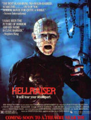
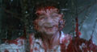
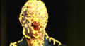
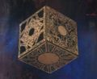
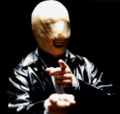

Восставшие из ада
1987 (+ восемь сиквелов, готовящийся ремейк, таки ещё один сиквел, но от автора оригинала)

Тонкий британский хоррор
Суть такова: один из героев фильма с помощью таинственного артефакта под названием «шкатулка Лемаршана» открывает врата в иное измерение, попадает в ад, где проходит бесконечные сеансы весьма экстремального BDSM, потом это ему надоедает, он делает попытку сбежать и вынужден, впоследствии, спасаться от преследующих его содомитов сонибоев сенобитов (англ. cenobite, надмозг. стенобиты, тем более, что таки да, иногда проходят сквозь разломы в стенах, хотя, вообще-то, правильно «киновитов», блеать) — демонов ада.
Значимость:
- Фильм поставлен по повести расового британского писателя Клайва Баркера. Собственно, Баркер снял первый фильм и поучаствовал в съемках второго. В дальнейшем был выпилен из процесса изготовления франшизы. Надо было ставить фактуру на коммерческие рельсы, а Баркер мешал. Именно с третьей части сенобиты и непосредственно Пинхед выходят на первый план истории, до этого они были мебелью, антуражем.
- Перевод названия является одновременно неправильным (надмозг.: «Тот, кто возрождает Ад», адаптир. надмозг.: «Несущий Ад», дословный перевод: «буян», «дебошир». Адекватным переводом был бы: «Сеющий Хаос» или «Пробуждающий Хаос».), пугающим и смешным («из ЗАДА?!ОЛОЛОЛОЛО!!!))))»). Название известно многим советским людям, при том, что представление о сюжете имеют только избранные кинофаги. С названием — отдельный спор. Переводчик-кун замечает, что когда верный по смыслу перевод звучит как полное гавно в стиле «Поднимающий\Вздымающий ад», то в ход идет такой весьма популярный прием перевода заголовков, названий, и имен собственных, как адаптация, дабы зритель или читатель лучше воспринимал текст и просто не срал кирпичами от каличных, но зато расово правильно переведенных фраз. В данном случае смысл передан отлично.
- Бюджет фильма был весьма скромным, вследствие чего именно здесь можно наблюдать стереотипные дешевые спецэффекты — если спецэффектами можно назвать развешенные по крючьям куски натуральной говядины и прочие весьма неаппетитные штучки. На «разрывающие кожу крючья» из ранних частей сейчас без слез (умиления) не взглянешь. При этом грим набижавших демонов выглядит весьма, для своего времени, достойно.
- Еше впечатляло поедание инфернальным бомжом всяких насикомых (с маянезиком), милые сценки в психушке и чудный двухголовый монстрик, бегающий за Кёрсти.
- Те, кому в свое время таки довелось посмотреть фильм, наверняка запомнили и местного главного злодея с говорящим именем
СкинхэдПинхэд (Doug Bradley), также обладателя яркой внешности и страсти выдавать one-liner’ы, полные пафоса и готизма. Дагу Брэдли, кстати, на кастинге предложили две роли: Пинхэда и водителя грузовика. Брэдли выбрал, и не прогадал. Также в девяностых Даг был замечен в качестве чтеца различных гомо-эротико-вампирских бредней на альбомах британского ВИА Колыбель разврата.
- В 2000 году группа Сектор Газа выпустила альбом «Восставший из ада».
- Песня с названием Hellraiser есть в репертуаре Оззи Озборна и ВИА Motorhead.
- Алсо, существовала такая группа Hellraiser. Нихуёво доставила обложкой (и названием) альбома «No Brain — No Pain» и туром по всевозможным замкадскам под эгидой ЛДПР, а так же плакатом с лично Вольфычем в майке «Hellraiser» и подписью «Я такой же
говнарь, как и вы».
- Ну, и HRG рядом затесалась.
- В США фильм всегда воспринимался общественностью, как классический фильм ужасов, а на постсоветском пространстве, как комедия чёрного юмора. Эта разница умиляет.
- В расово японской хоррор-игре Siren, наводнивших деревню зомби кличут сибито (shibito). Что при некотором фильмопоклонничестве можно считать отсылкой к фильму.

LOL

Чаттерер под воздействием суровых веществ спецэффектов

Некоторые настаивают, что сия коробка — и есть Hellraiser

Безликий одобряет